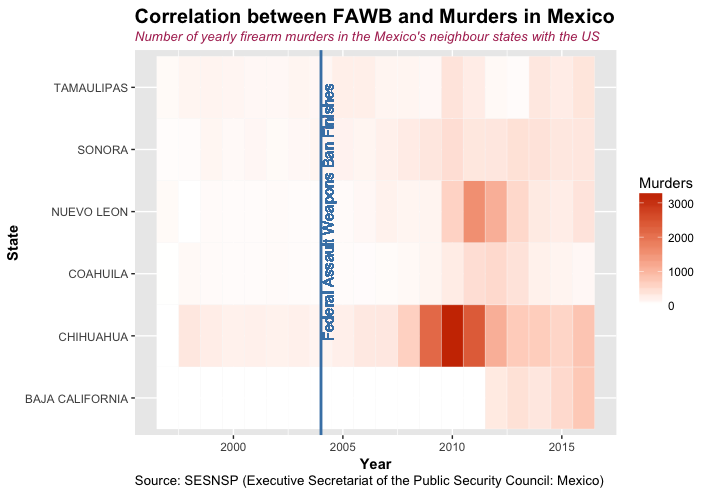

68.7 %
Firearms Recovered in Mexico and Submitted to ATF for Tracing in 2016
Source: ATF Firearms tracing system

60%
Homicides rose after Assault Weapons Ban
Source: Cross-Border Spillover: U.S. Gun Laws and Violence in Mexico
ARINDRAJIT DUBE, OEINDRILA DUBE & OMAR GARCÍA-PONCE
All
Dealer
Pawnbroker
Man. Firearms
Man. Ammunition
After finishing the motion press "restart before beggining a new one"
Start
Reset